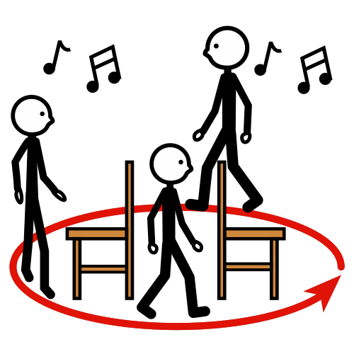

Bei der Stuhlpolonaise tanzen die Kinder um Stühle herum, während die Musik spielt. Wenn die Musik stoppt, müssen sich die Kinder schnell auf einen Stuhl setzen. Es gibt einen (oder mehrere) Stuhl weniger als Anzahl der Personen. Derjenige, der keinen Stuhl bekommt, scheidet aus.
Alternativ, falls nicht genug Stühle vorhanden sind, kann man auch Hoolahoopreifen, Zeitungsseiten, oder mit Kreide aufgemalte Kreise als Referenzorte nehmen.
Straßenmalkreide auf Amazon ansehen
Beim Tauziehen treten zwei Teams gegeneinander an und ziehen an entgegengesetzten Enden eines Seils. Das Team, das die gegnerische Mannschaft über eine markierte Linie zieht, gewinnt das Spiel.
Beim Luftballontanz tanzen die Kinder zu Musik, während sie versuchen, einen Luftballon zwischen ihren Körpern zu halten, ohne dass er den Boden berührt. Wenn ein Ballon platzt oder den Boden berührt, scheidet der entsprechende Teilnehmer aus.

Einfache Motive mit normaler Farbe:
Motive mit Neonfarbe für das Schwarzlicht: